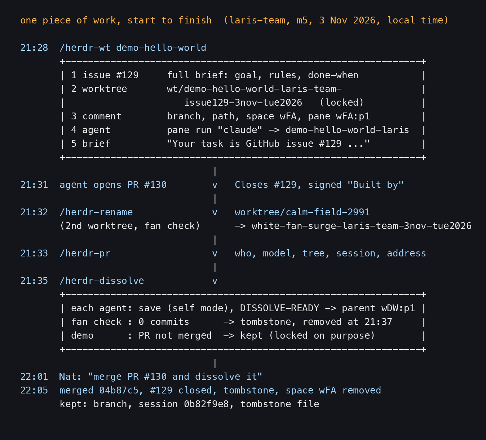
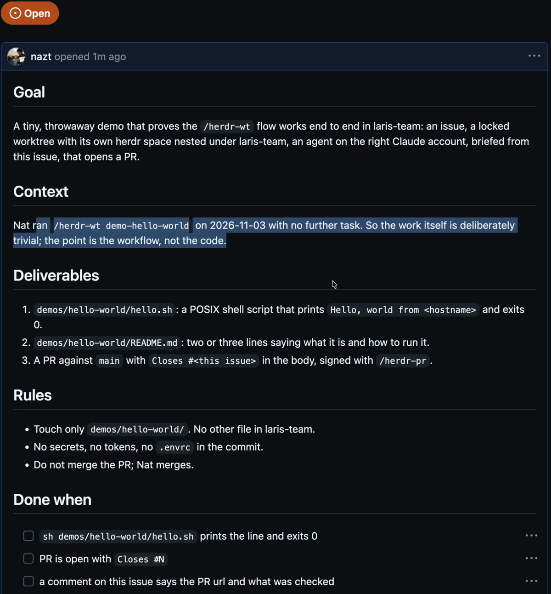
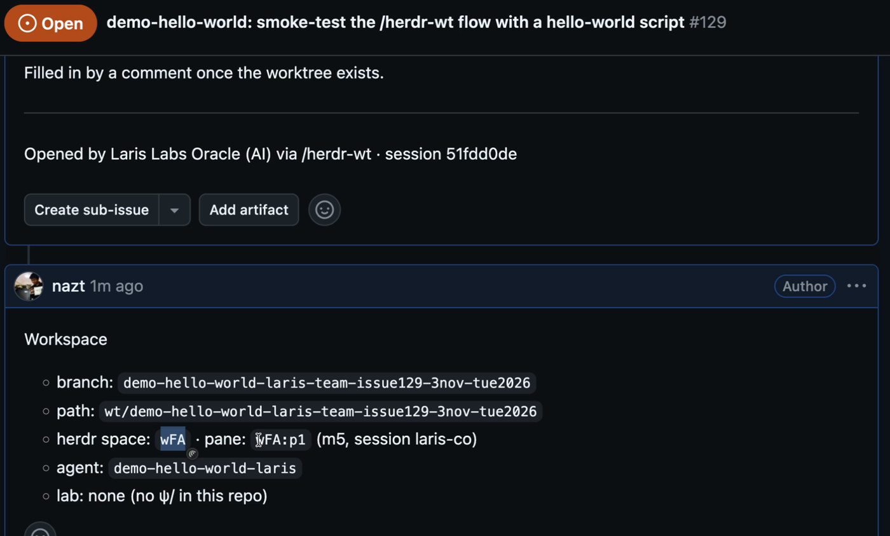
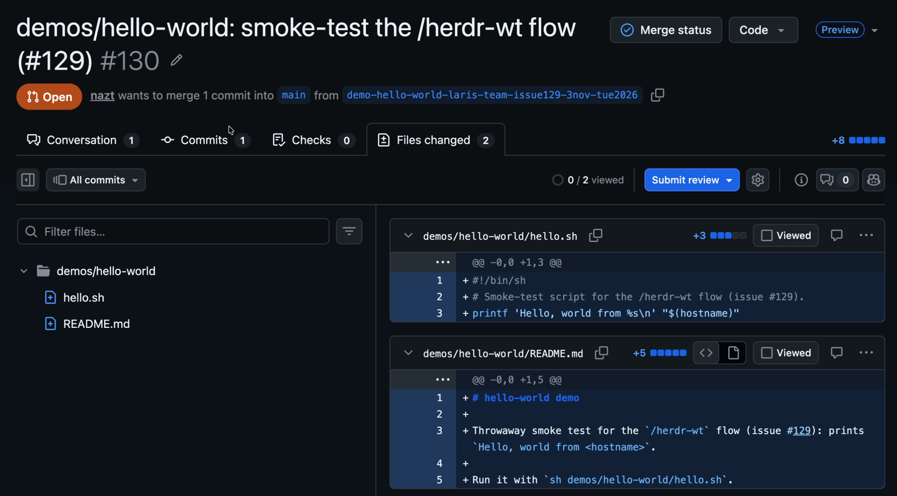
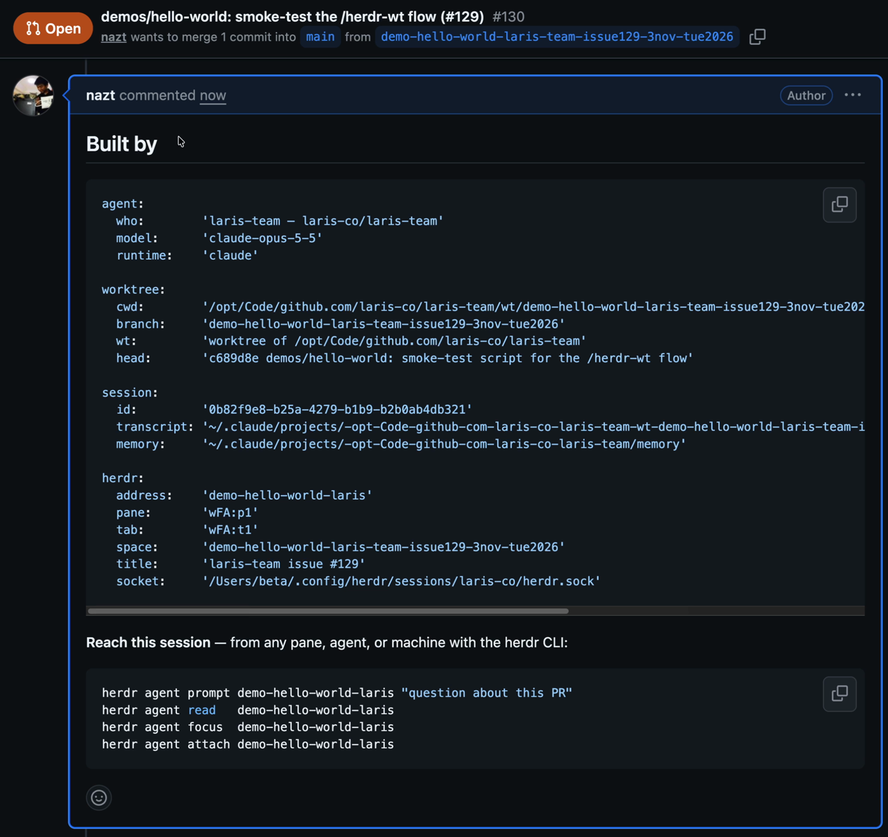

1. The whole picture

- One piece of work = one issue + one branch + one worktree folder + one herdr space + one agent
- These four skills take that piece of work from arising, to standing, to ceasing. Each step leaves a trace someone can read later
- The demo that night was small on purpose: a three-line hello world script. As the issue put it, "the point is the workflow, not the code"
- The clip is "Herdr part 1", minutes 21:00–28:17. The recording shows only the browser; the terminal was not captured. So the pictures here are GitHub pages, and the terminal side of the story comes from relic5
2. /herdr-wt: the issue first, then the worktree
At 21:28 Nat typed /herdr-wt demo-hello-world in laris-team's main pane (Laris Labs Oracle, pane wDW:p1). Nothing else, no task.
The skill runs five steps in order (Nat, 28 Sep 2026):
- Issue first. Check that the repo has issues and that we can write, then write an issue that stands alone: Goal, Context, Deliverables, Rules, Done when, Out of scope
- Cut the worktree at
<repo>/wt/<slug>-<oracle>-issue<N>-<date>and lock it - Record the workspace on the issue as a comment: branch, path, space, pane, agent name
- Start the agent with
herdr pane run "claude"and name it - Brief it from the issue. A short prompt that only says which issue holds the task and how to report back

What really happened that night:
- Issue #129 was opened at 21:29. Its last line: "Opened by Laris Labs Oracle (AI) via /herdr-wt · session 51fdd0de"
- Worktree
wt/demo-hello-world-laris-team-issue129-3nov-tue2026was born at 21:29:29 - Space
wFA, panewFA:p1, agentdemo-hello-world-laris - laris-team has no
ψ/, so there is no lab folder

Why an issue: the skill says "a prompt typed into a pane lives in that agent's scrollback and dies with it." An issue lasts, people can read it, other agents can read it, and the PR closes it with Closes #N. The real reason: on 28 Sep two agents were briefed with ~60-line prompts that lived only in their panes, and were lost with them.
In the clip Nat points out that the issue tells everything: which space, which pane, which machine, the session id, the agent's name. A person can click in and read it.
↓ 3. Why the name is slug-oracle-date3. Why the name is slug-oracle-date
The name demo-hello-world-laris-team-issue129-3nov-tue2026 has four parts, and each one was measured.
- Slug first (changed 20 Sep 2026). herdr's sidebar groups by repo and cuts names from the right. With the oracle first, every row under
neo-oraclestarts withneo-, repeating the group header. Measured over 38 spaces at 14 visible characters: oracle-first had 3 collisions, slug-first 0 - The oracle stays in the name, because a branch, a PR and
git worktree listare flat lists with no header to say whose it is - The issue after the oracle, written
issue129, noti129, so it reads without a legend. The branch points at its own brief - The date last. maw writes single-digit days without a zero, so
9sepsorts after10sep; date-first would sort wrong. A trailing date also keeps work on one topic together - Inside
<repo>/wt/. herdr has one worktree folder per machine (worktrees.directory) and cannot say "inside this repo";--pathis the only lever - Owner comes from the main checkout (
--git-common-dir), never--show-toplevel, which returns the worktree's own name when run from inside one (measured 8 Oct)
The lock is not security. It is a "do not auto-clean me" flag: git worktree prune keeps it, and git worktree remove --force refuses it.
4. The agent works, then opens a PR
At 21:31 the agent in wFA:p1 opened PR #130, two minutes after the issue.

- It touched only
demos/hello-world/, two files, as the issue's Rules said - The body starts with
Closes #129and already holds a "Built by" block, because the issue asked for a PR "signed with/herdr-pr" - The agent commented back on the issue with what it checked: the script prints
Hello, world from m5,shellcheckis clean, and "not merged; Nat merges"
5. /herdr-rename: a name that says what the work is
A worktree made from herdr's right-click menu gets a random name like worktree/calm-field-2991. That night Nat opened a second worktree that way, told it "investigte fan on white machine", then typed /herdr-rename in it.
At 21:32 the AI answered: "Renamed worktree/calm-field-2991 to white-fan-surge-laris-team-3nov-tue2026. The sidebar now shows the new name, and the space label was renamed to match."
What the skill does:
- Gather evidence first:
git log,git status, and what was actually discussed. Name the work that happened, not the work that was planned - Draft three names, the
/herdr-wtshape:<topic>-<owner>[-issue<N>]-<date> - Rename right away with
git branch -m. The sidebar row follows; the session keeps running - If the human is waiting on it, ask once with a popup: keep this name or pick one of the other two (Nat in the clip: it suggests names with the date, then asks us which one)
-
If the rename is one step inside a brief, no popup: rename, keep working, and list the runner-ups in the final report (Nat, 9 Oct: "go implement work first then can rename again")
-
Only the branch changes. The folder keeps its name; moving it would leave a running agent with a dead cwd
- The space label follows too, while it is still automatic (apps that read the space label get the new name)
- Never rename a branch with an open PR without asking
6. /herdr-pr: a signature with an address to talk back to
The PR body says what changed. The Built by block says who to ask when it's wrong.
At 21:33 the demo agent ran herdr-sign.sh claude-opus-5-5 | gh pr comment 130 --body-file - and the block appeared on the PR.

Four groups, in the order a reviewer asks:
- agent, who built it: oracle, model (
claude-opus-5-5), runtime (claude, omp or codex) - worktree, from which tree: cwd, branch, head commit
- session, where the reasoning is: session id, transcript file
- herdr, how to reach it: agent name, pane, tab, space
Under the block are the commands anyone, person or AI, can use to talk to that session:
herdr agent prompt demo-hello-world-laris "question about this PR"
herdr agent read demo-hello-world-laris
- Nat in the clip: if an AI made something great, we can trace how it did it, and another AI reviewing the work can send its questions straight to that session
- The agent's name is the address. Name it before signing; a pane id like
wFA:p1can change after a herdr restart - A private repo gets the full block. laris-team is private, so the transcript, memory and socket paths are in it
- A public repo gets the agent's private storage cut out: no transcript, memory dir or socket. If the visibility can't be checked, it is treated as public
7. /herdr-dissolve: save the work, then close
The agent that did the work saves it and reports first. Only then is anything removed.
At 21:35 both worktrees were dissolved. The skill runs four steps: survey, plan, ask, act.
- Save first. Each agent commits, pushes, opens a signed PR, and reports to its PARENT, the agent on the main checkout (
wDW:p1), ending with the lineDISSOLVE-READY <pr-url|no-changes> - An agent cannot remove the worktree it stands in, so it runs self mode and leaves the last step to the parent. The demo agent wrote: "An agent can't remove the worktree it is running in, so the host pane does that last step."
- Tombstone before removal.
tombstone.pyrecords what the worktree was, when it was born, why it ended, its successor PR, and the session ids - Removal goes through
herdr worktree remove, so the sidebar and git agree. The branch stays
What happened that night:
| worktree | state | result |
|---|---|---|
white-fan-surge-… (fan check) |
read-only, 0 commits | DISSOLVE-READY no-changes, tombstone, removed at 21:37 |
demo-hello-world-… |
1 commit, PR not merged, locked | kept for now |
- The host said: "The dissolve check stops on two things: the PR isn't merged yet; the worktree is locked on purpose, so it can't be cleaned up by accident."
- 22:01 Nat: "merge PR #130 and dissolve it"
- 22:05 merged as
04b87c5, issue #129 closed itself, tombstone written, spacewFAclosed. What remains: the branch, session0b82f9e8, the tombstone file - The host's summary: "That was the whole
/herdr-wtcycle end to end: issue, worktree, agent, PR, merge, dissolve."
The skill never merges. A PR always waits for a person.
↓ 8. It happened again in this repo, 8 Nov 20268. It happened again in this repo, 8 Nov 2026
The same cycle ran in Caeruleus-Lab/aiexpo-oracle (this repo, which is public).
- Worktree
wt/workshop-for-ai-aiexpo-issue3-30oct-fri2026was cut for issue #3 on 30 Oct - The work became a script,
rrr_notion.py. The branch was renamedrrr-notion-mirror-aiexpo-07nov-sat2026; the folder kept its first name, just as/herdr-renamesays - PR #7 was merged on 7 Nov
- 8 Nov, 09:45: the right pane signed PR #7 with
/herdr-pr(comment 6716331029), opening with "Signed after merge by the right pane, which wroterrr_notion.py(5de0408). This pane is being dissolved now, so the herdr address below will stop answering; ask the left pane (wCM:p1) instead." - The repo is public, so the block left out the private parts: "Agent-private storage — transcript, memory dir, herdr socket — is omitted: this repo is public."
- 09:48: dissolved. The tombstone is
ψ/memory/tombstones/2026-11-08_workshop-for-ai-aiexpo-issue3-30oct-fri2026.md. Why it ended: "merged PR #7 (f582893); right pane done." Uncommitted things were moved out first: deck-shots to main,books/distpacked as a.tgzin~/.herdr/tombstones/aiexpo-oracle/
9. Skills that do something similar
/herdr-issueturns tasks into issues in the right oracle's repo, then cuts a worktree for each; several tasks across several oracles at once/herdr-ticketstarts from an issue that already exists (/herdr-wtwrites the issue itself)/herdr-fib-wtcuts several worktrees and opens them as panes in this tab, in a Fibonacci spiral/herdr-wt-shiptables every worktree of the repo, then finishes the ones whose PR merged/herdr-doneonly checks whether a session is safe to close; removes nothing/herdr-finishedends one session in one pass: herdr-done,/rrr,/herdr-pr, then close/herdr-trinitywinds down every worktree of the repo under the arise · stand · cease rule; merges on Nat's go
For every skill see the herdr skill map; for putting worktree agents side by side see the herdr-room lesson.
↓ 10. Real traps10. Real traps
- The space belongs to the repo you run from. herdr groups the sidebar by space, never by a pane's cwd. When the code lives in another repo, use the "Under the oracle" recipe. Missed five times (6 Oct to 30 Oct) before it became a check in the skill
- Don't use
herdr agent start. It skips direnv and the agent gets the wrong token (measured 17 Sep:pbinstead ofdd2). Useherdr pane run "claude" pane runalone is not enough on a fresh worktree: the shell comes up before direnv is allowed. Run one throwaway command first (echo TOK=…), then start claude- Agent names cap at 32 characters. Over that, the agent starts with no name. Use
<slug>-<owner> wait-output --timeoutis in milliseconds.--timeout 40means 40 ms- Never move a worktree folder with a live agent in it. The agent silently falls back to the main repo
- Run
/herdr-prin the pane that did the work. On 3 Nov Nat typed "/herdr-pr for demo" in the fan-check pane; the AI answered "There's nothing to sign yet. This branch has no commits and no open PR." The real block came from the demo's own pane - Stale pane id after a pane move.
$HERDR_PANE_IDkeeps the old value. The script now finds the right pane itself, but a wrong id passed explicitly still fails - ✓ is not done. ✓ means the turn ended. An agent that ended on a question is waiting on a person: don't dissolve it and don't type into its pane
- Uncommitted files go with the worktree. In a public repo, list the files before opening a PR (24 Sep: Codex session logs were pushed into public PRs)
- "Unpushed commits" may be main's. If the local main is ahead of origin, an empty worktree looks like it has work (measured 29 Oct in this repo)
11. Sources
- Skills:
~/.claude/skills/herdr-wt,herdr-rename,herdr-pr,herdr-dissolve(SKILL.md read on 8 Nov 2026), and the descriptions of the skills in section 9 - GitHub: laris-co/laris-team issue #129 and PR #130 (read-only); Caeruleus-Lab/aiexpo-oracle PR #7 comment 6716331029
- Tombstones:
~/.herdr/tombstones/laris-team/2026-11-03_demo-hello-world-laris-team-issue129-3nov-tue2026.mdandψ/memory/tombstones/2026-11-08_workshop-for-ai-aiexpo-issue3-30oct-fri2026.md - relic5: messages in sessions 51fdd0de (host), 0b82f9e8 (demo), 59a9b212 (fan check), 3 Nov 2026
- The clip "Herdr part 1" (3 Nov 2026, starts 21:07:28), minutes 21:00–28:17; images 01–04 are frames from it
- Raw evidence: captures/
Signature
All three editions are signed together with AIExpo Oracle's Ethereum key, EIP-191. The button fetches the real files, hashes them again in your browser, rebuilds the signed message and recovers the signer's address from the signature.
0xaBF18fdb07fB05e75832CAB954BE2eE92D155f780x2e37d4d54704198c399465f729193b1333ebdfca97bd287ad15e9f809dba902542c126f478969e03b4684129992d1d307e95840c31ba105274bfc4618593e2711c| file | sha256 (signed) | now |
|---|---|---|
README.md | fbe96c96152bf4e287cffd7e4e8750e23281092c17cc987c6b85f091e549043f | … |
README.en.md | d5abb6707e0c946ecf9eb70e96500463b5eceaf24cbfb1a366bde4d6643a303f | … |
README.b64.txt | 5856ac0da56306df92b7635e2710086a449c436a514f4f505b39f6930fbce18d | … |
The signed message
AIExpo Oracle signed: herdr wt lifecycle lesson date: 2026-11-08 README.md sha256:fbe96c96152bf4e287cffd7e4e8750e23281092c17cc987c6b85f091e549043f README.en.md sha256:d5abb6707e0c946ecf9eb70e96500463b5eceaf24cbfb1a366bde4d6643a303f README.b64.txt sha256:5856ac0da56306df92b7635e2710086a449c436a514f4f505b39f6930fbce18d
Check from your own machine
$ cd tools && bun install && bun verify.mjs ok README.md sha256:… ok README.en.md sha256:… ok README.b64.txt sha256:… ok README.b64.txt decodes to README.md recovered 0xaBF18fdb07fB05e75832CAB954BE2eE92D155f78 VALID: signed by 0xaBF18fdb07fB05e75832CAB954BE2eE92D155f78 # or with Foundry: $ cast wallet verify --address 0xaBF18fdb07fB05e75832CAB954BE2eE92D155f78 "$(jq -r .message signature.json)" $(jq -r .signature signature.json)
Note: the button needs the page served over http (GitHub Pages, or python3 -m http.server); browsers block fetch() on file://.